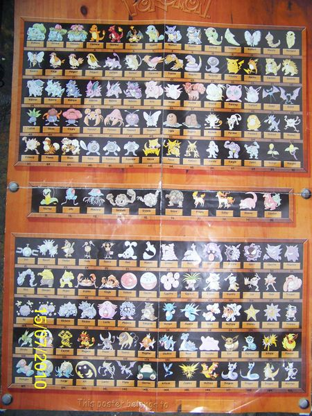
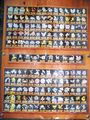

{kind=link}
{kind=link}
{kind=link}
File:Generation I prototype English names.jpg
From Bulbagarden Archives

{kind=link}
Size of this preview: 450 × 600 pixels. Other resolutions: 180 × 240 pixels | 360 × 480 pixels | 576 × 768 pixels | 768 × 1,024 pixels | 2,448 × 3,264 pixels.
{kind=link}
{kind=link}
{kind=link}
{kind=link}
{kind=link}
Original file (2,448 × 3,264 pixels, file size: 755 KB, MIME type: image/jpeg)
Summary
A poster of unknown origin displaying early (but shortened) English names of Generation I Pokémon. Note that the names of Metapod and Kokoon are swapped.
Licensing
| This image is copyrighted or is a registered trademark. The contributor claims this to be fair use. |
File history
Click on a date/time to view the file as it appeared at that time.
| Date/Time | Thumbnail | Dimensions | User | Comment | |
|---|---|---|---|---|---|
| current | 15:11, 10 November 2011 |  | 2,448 × 3,264 (755 KB) | Soincfunt (talk | contribs) | A poster of unknown origin displaying early (but shortened) English names of Generation I Pokémon. |
- You cannot overwrite this file.
File usage
There are no pages that link to this file.
Global file usage
The following other wikis use this file:
- Usage on bulbapedia.bulbagarden.net
{kind=link}
{kind=link}
{kind=link}
{kind=link}
{kind=link}
{kind=link}